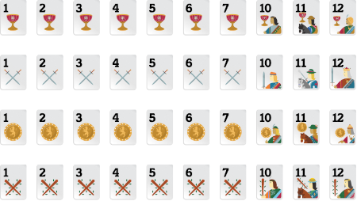

Regras Como Jogar Truco Gaudério
Pode ser jogado com dois ou quatro jogadores. No jogo com dois participantes, você jogará contra a única pessoa presente na mesa. A contagem de pontos é individual. Quando há quatro participantes, duas duplas são formadas e uma dupla joga contra a outra. O seu parceiro de jogo será a pessoa que estiver posicionada exatamente acima de você na mesa de jogo, com o nome dentro de uma caixa da mesma cor que a sua. Assim como o Truco Paulista, o Truco Gaudério é disputado em mãos. Cada mão vale inicialmente 1 ponto e ganha o jogo quem atingir o número total de pontos primeiro. No Truco Gaudério ocorre uma disputa preliminar ao início de cada mão conhecida como Envido. Com o Envido, pode-se aumentar o valor da mão. A distribuição das cartas é feita de forma automática e aleatória pelo nosso sistema, não havendo a intervenção de nenhum jogador ou membro da equipe Jogatina.com neste processo.
Convenções
